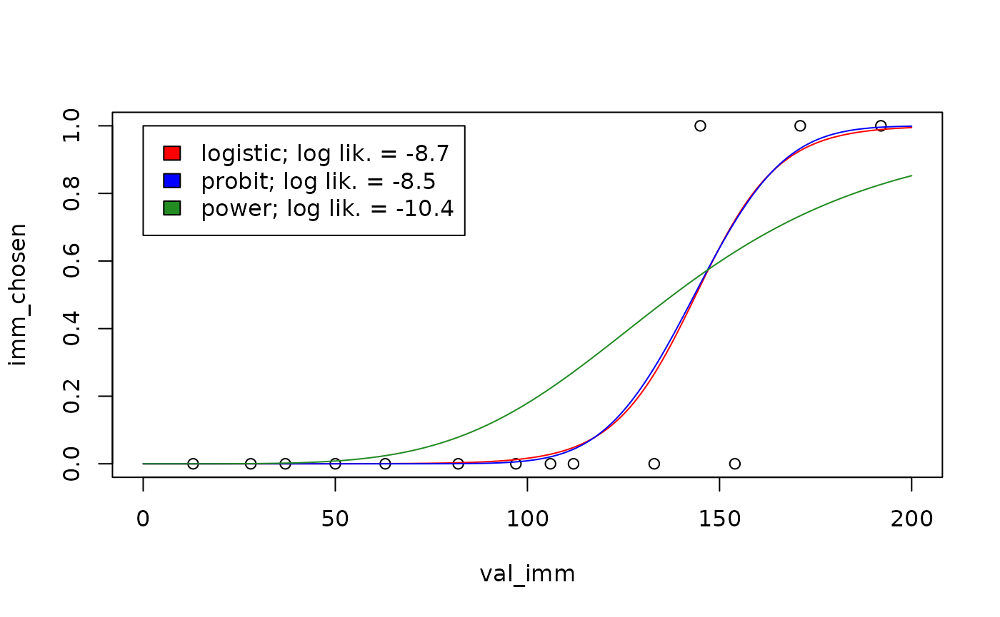
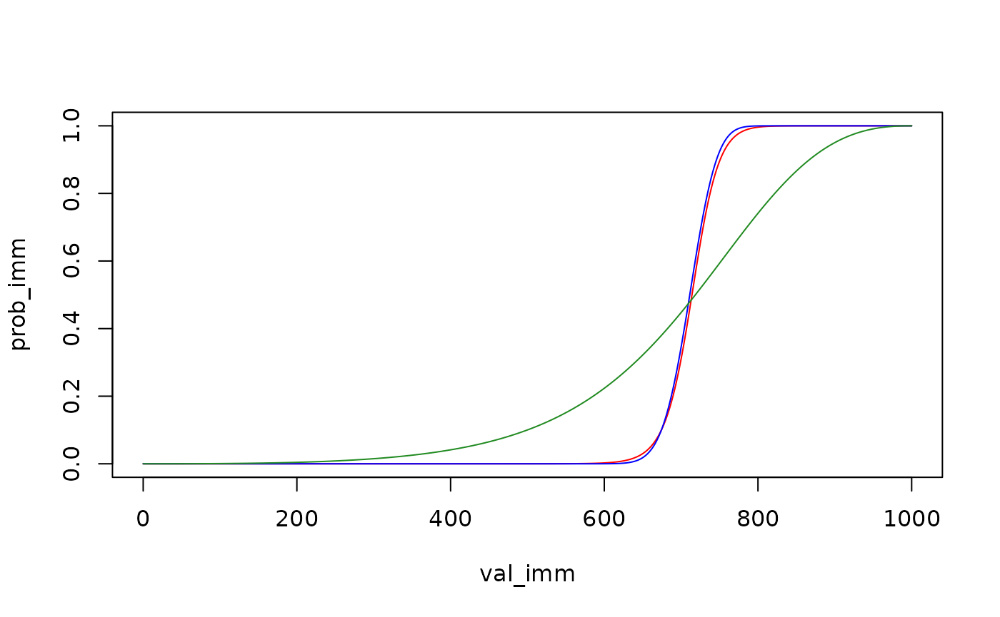

Background
When modeling
binary choice data using td_bcnm,
not only the discount function but also the choice rule
must be specified. Whereas the discount function is parameterized to
specify how the subjective value of a future reward decreases with
delay, the choice rule is parameterized to specify the probability of
choosing either of two rewards whose subjective values are given. To
illustrate, plot(... type = "summary") visualizes the
discount function:
# Load data and fit model
data("td_bc_single_ptpt")
mod <- td_bcnm(td_bc_single_ptpt, discount_function = "exponential")
# Plot the discount curve
plot(mod, type = "summary", verbose = F)
whereas plot(... type = "endpoints") visualizes the
choice rule (i.e., the psychometric curve for a given combination of
delay and delayed reward value):
# Plot the choice rule
plot(mod, type = "endpoints", del = 50, val_del = 200, verbose = F)Just as we can fit a range
of discount functions to the data, we can also fit several choice
rules using the choice_rule argument to
td_bcnm. Mathematically, each choice rule gives the
probability of selecting the immediate reward,
,
given the subjective values of the immediate and delayed rewards
and
respectively (where
is simply the face value of the immediate reward and
depends on the discount curve), and a “sharpness” parameter
,
where a larger
reflects less “noisy” decision making. Built-in choice rules are listed
below.
Built-in choice rules
Logistic
choice_rule = "logistic" (the default) gives the
logistic choice rule:
where is the logistic function , which is the cumulative distribution function (CDF) of a logistic distribution with location parameter 0 and scale parameter 1.
Probit (normal)
choice_rule = "probit" gives the probit choice rule:
where is the CDF of the standard normal distribution.
Power (log-logistic)
choice_rule = "power" gives the power choice rule (Luce, 1959/2005):
where the right hand side of the equation is the CDF of a log-logistic distribution with scale parameter 1 and shape parameter .
Comparing choice rules
Broadly speaking, the logistic and probit choice rules are similar—both are based on a “Fechner model” (Becker, DeGroot, & Marschak, 1963) in which comparisons between subjective reward values are “noisy”:
where the noise, represented by the random variable , is assumed to follow either a logistic distribution for the logistic choice rule, or a normal distribution for the probit choice rule. In contrast, the power choice rule could be taken to imply the following Fechner-like model:
where is now assumed to follow a log-logistic distribution. Mathematical details can be found in Kinley, Oluwasola & Becker (2025).
These theoretical differences between the choice rules have the following practical implications:
- In the logistic and probit choice rules, decisions are less stochastic (i.e., is effectively higher) for larger reward magnitudes, whereas decision stochasticity is constant (i.e., is effectively constant) for the power choice rule. There is evidence that real human decision making is indeed less stochastic for larger reward values (Gershman & Bhui, 2020). However, it is not obvious that trying to capture this effect for data with a narrow range of reward magnitudes will improve model fit.
- For the logistic and probit choice rules, is never exactly 0 or 1. In contrast, for the power choice rule, when . Thus, for the power choice rule, model fit will be strongly negatively impacted if a participant ever chose an immediate reward of 0. However, such decisions are arguably better used for attention checks than model fitting (see, for example, Almog et al., 2023).
To see the differences between the power choice rule on the one hand and the logistic and probit choice rules on the other, we can visualize their predictions for the same participant:
vis_del <- sort(unique(td_bc_single_ptpt$del))[2]
newdata <- data.frame(del = vis_del, val_del = 200, val_imm = seq(0, 200, length.out = 1000))
plot(imm_chosen ~ val_imm, data = subset(td_bc_single_ptpt, del == vis_del),
xlim = c(0, 200), ylim = c(0, 1))
plot_legend <- c("red" = "logistic",
"blue" = "probit",
"forestgreen" = "power")
logLiks <- c()
for (entry in names(plot_legend)) {
choice_rule <- plot_legend[entry]
mod <- td_bcnm(td_bc_single_ptpt,
discount_function = "exponential",
choice_rule = choice_rule)
logLiks[entry] <- logLik(mod)
preds <- predict(mod, type = 'response', newdata = newdata)
lines(preds ~ newdata$val_imm, col = entry)
}
legend(0, 1,
fill = names(plot_legend),
legend = paste(plot_legend, '; log lik. = ', round(logLiks, 1), sep = ''))
As suggested by the log likelihood measurements shown in the legend above, the choice rule can significantly impact model fit (Wulff & van den Bos, 2017). Therefore it is a good idea to explore multiple choice rules for a given dataset to see which one best describes the data.
Fixed-endpoint choice rules
As described earlier, for the power choice rule, the probability of choosing an immediate reward of $0 is 0. In that sense, the left endpoint of the psychometric curve is “fixed” at 0. This is arguably an advantage, if choosing an immediate reward of $0 should be taken as a failed attention check rather than a reflection of an individual’s true preferences (Kinley, Oluwasola & Becker, 2025). Following this logic, we can create choice rules in which both endpoints are fixed, i.e., where the probability of choosing $0 is 0 and where the probability of choosing $x now over $x at some delay is 1, for all x.
This option is available through the fixed_ends argument
to td_bcnm. To see its effect, we can re-fit the models
from the plot above with fixed_ends = TRUE:
vis_del <- sort(unique(td_bc_single_ptpt$del))[2]
vis_val_del <- 200
newdata <- data.frame(del = vis_del,
val_del = vis_val_del,
val_imm = seq(0, vis_val_del, length.out = 1000))
plot(imm_chosen ~ val_imm, data = subset(td_bc_single_ptpt, del == vis_del),
xlim = c(0, vis_val_del), ylim = c(0, 1))
plot_legend <- c("red" = "logistic",
"blue" = "probit",
"forestgreen" = "power")
logLiks <- c()
for (entry in names(plot_legend)) {
choice_rule <- plot_legend[entry]
mod <- td_bcnm(td_bc_single_ptpt,
discount_function = "exponential",
fixed_ends = TRUE, # Fixed endpoints
choice_rule = choice_rule)
logLiks[entry] <- logLik(mod)
preds <- predict(mod, type = 'response', newdata = newdata)
lines(preds ~ newdata$val_imm, col = entry)
}
legend(0, 1,
fill = names(plot_legend),
legend = paste(plot_legend, '; log lik. = ', round(logLiks, 1), sep = ''))
Note that the psychometric curves are no longer symmetrical about for the logistic and probit choice rules. As before, there is an important difference between the power choice rule and the others: in the power choice rule, decisions do not become less stochastic for larger reward magnitudes. To see this, we can re-plot the psychometric curves above, but this time predicting what the choice probabilities would be if the reward magnitudes were multiplied by 5:
vis_del <- sort(unique(td_bc_single_ptpt$del))[2]
vis_val_del <- 1000
newdata <- data.frame(del = vis_del,
val_del = vis_val_del,
val_imm = seq(0, vis_val_del, length.out = 1000))
plot(c(0, 1) ~ c(0, vis_val_del), type = "n",
xlab = "val_imm", ylab = "prob_imm")
plot_legend <- c("red" = "logistic",
"blue" = "probit",
"forestgreen" = "power")
for (entry in names(plot_legend)) {
choice_rule <- plot_legend[entry]
mod <- td_bcnm(td_bc_single_ptpt,
discount_function = "exponential",
fixed_ends = TRUE,
choice_rule = choice_rule)
preds <- predict(mod, type = 'response', newdata = newdata)
lines(preds ~ newdata$val_imm, col = entry)
}
The psychometric curve for the power choice rule looks the same, while the curves for the logistic and probit choice rules are substantially steeper.
The mathematical details of how fixed-endpoint choice rules are generated can be found in Kinley, Oluwasola & Becker (2025). That paper finds that fixed-endpoint choice rules improve model fit, but there is an important caveat: although the best-fitting model for a given individual (comparing across discount functions and choice rules) is often one with a fixed-endpoint choice rule, this does not mean that using a fixed-endpoint choice rule will improve model fit when a single discount function is assumed across individuals. In fact, although we have not tested this systematically, when a given discount function does not provide a good fit to an individual’s data, using a fixed-endpoint choice rule seems to often make the model fit worse.
⚠️ In other words, you should not run something like
td_bcnm(data = ..., discount_function = "hyperbolic", fixed_ends = TRUE). Instead, you should runtd_bcnm(data = ..., fixed_ends = TRUE)to allow a range of discount functions to be compared.
For the examples above, we already knew that the data in
td_bc_single_ptpt was well fit by an exponential discount
function, and the model fit turned out to be improved by switching to a
fixed-endpoints choice rule. However, if we repeat the model fitting
using a hyperbolic discount function, which does not fit the data well,
a fixed-endpoint choice rule actually makes the model fit worse:
mod_free <- td_bcnm(td_bc_single_ptpt,
discount_function = "hyperbolic",
fixed_ends = FALSE)
mod_fixed <- td_bcnm(td_bc_single_ptpt,
discount_function = "hyperbolic",
fixed_ends = TRUE)
cat(sprintf('Log lik. with free endpoints: %.2f\n', logLik(mod_free)))
#> Log lik. with free endpoints: -13.59
cat(sprintf('Log lik. with fixed endpoints: %.2f\n', logLik(mod_fixed)))
#> Log lik. with fixed endpoints: -14.02Custom choice rules
The choice rules described above can be generalized as
where is the CDF of the distribution of the decision noise , is a scale function applied to , and is some transformation. These three functions jointly specify the choice rule, as described below. and are the face (vs. subjective) values of the immediate and delayed rewards, respectively, and is a discount function parameterized by some vector of parameters and evaluated at delay .
The functions
,
,
and
can be specified using the arguments noise_dist,
gamma_scale, and transform, respectively, to
td_bcnm. When using the argument choice_rule,
these three are pre-set internally as follows (assuming
fixed_ends = FALSE):
choice_rule |
noise_dist |
gamma_scale |
transform |
|---|---|---|---|
"logistic" |
"logis";
|
"linear";
|
"identity";
|
"probit" |
"norm";
|
"linear";
|
"identity";
|
"power" |
"logis";
|
"none";
|
"log";
|
Note that noise_dist must be a string to which the
prefixes p and q can be prepended to refer to
a probability distribution’s CDF and quantile functions, respectively
(e.g., pnorm is the CDF of the normal distribution,
qlogis is the quantile function of the logistic
distribution). Note also that fixed-endpoint versions of these choice
rules are generated by setting
transform = "noise_dist_quantile", which results in
(for an explanation, see Kinley, Oluwasola &
Becker, 2025).
When we set noise_dist, gamma_scale, and
transform ourselves, the arguments choice_rule
and fixed_ends are ignored, allowing us to generate custom
choice rules as shown below.
Example 1: Cauchit choice rule
To create a Cauchit choice rule (analogous to Cauchit regression in
the way the probit choice rule is analogous to probit regression), we
could use the same configuration as for the probit choice rule, but
switch the noise_dist to "cauchy":
mod_cauchit <- td_bcnm(td_bc_single_ptpt,
discount_function = "exponential",
noise_dist = "cauchy",
gamma_scale = "linear",
transform = "identity")
plot(mod_cauchit, type = "endpoints", del = 50, val_del = 200)The psychometric curve is now generated by a shifted and scaled
arctan function. We can create a fixed-endpoint variant of this choice
rule by setting transform = "noise_dist_quantile":
Example 2: log-normal choice rule
In the same way that the power choice rule is based on the log-logistic distribution, we can create a choice rule based on the log-normal distribution as follows:
mod_lognormal <- td_bcnm(td_bc_single_ptpt,
discount_function = "exponential",
noise_dist = "norm",
gamma_scale = "none",
transform = "log")
plot(mod_lognormal, type = "endpoints", del = 50, val_del = 200)As with the power choice rule, the left endpoint of the psychometric curve is fixed, i.e., when .